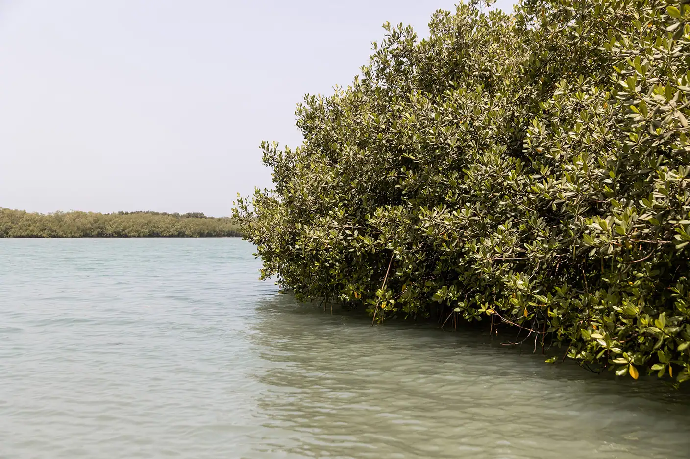

Natureza e faunaFotografia do ambiente dos BijagósPonto de partida: Bubaque
Os hipopótamos de Orango
Passeio de barco no Parque Nacional de Orango: fauna selvagem, aves e aldeias tradicionais. Mínimo de 2 pessoas.
Criar o meu itinerárioA partir de 30 €